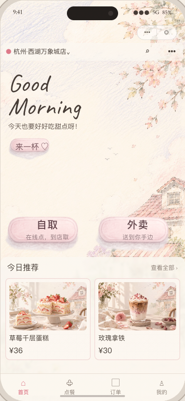
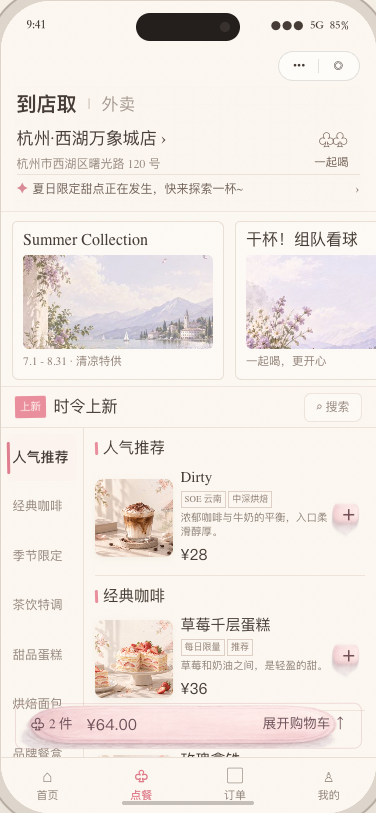
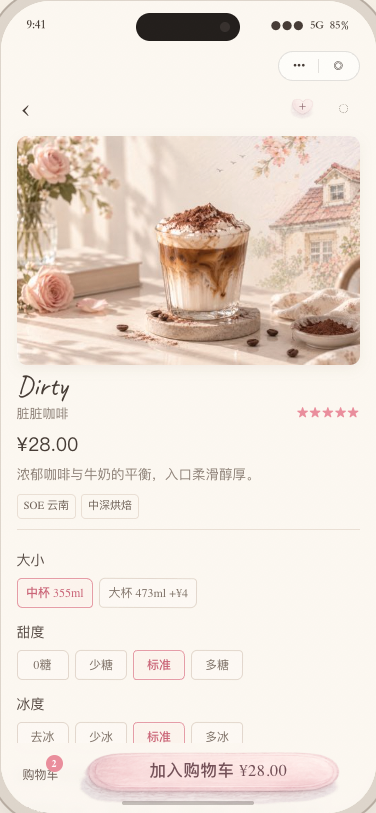
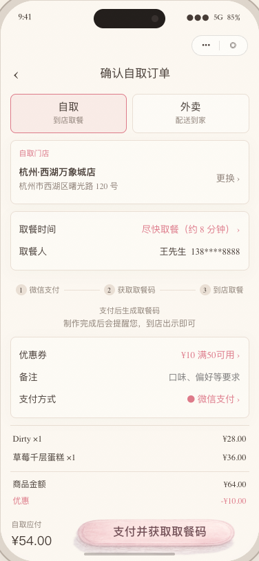
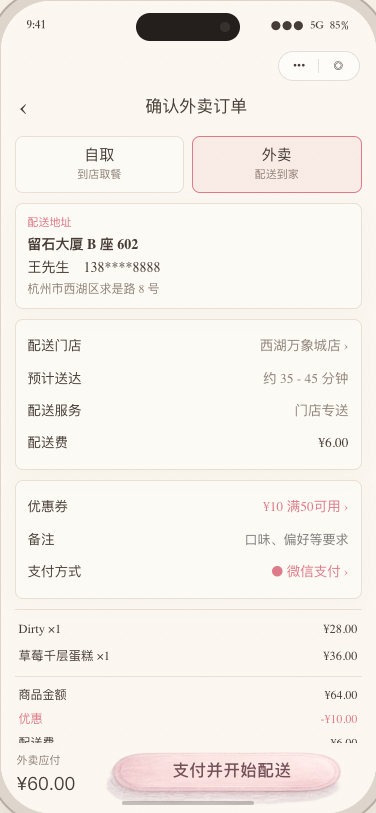
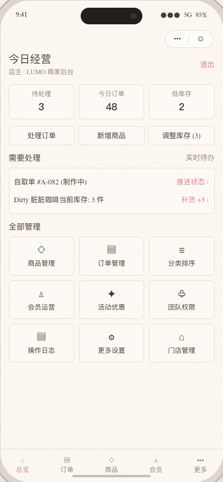

CONSUMER
需要快速完成决策的顾客
- 上班前预约自取
- 办公室外卖
- 浏览新品与修改咖啡规格
- 查看订单状态并快速复购
LUMO Coffee & Dessert
一套围绕精品咖啡馆设计的微信原生点单体验，连接商品发现、规格配置、自取 / 外卖履约与门店运营。
品牌感不是额外装饰，而是从首页到履约都保持一致的体验语言。
精品咖啡品牌重视空间、包装与服务体验，但移动点单很容易退化为一张高度标准化的商品列表。
真正的挑战，是在同一套产品中同时处理品牌表达、浏览效率、商品配置、履约清晰度与门店运营。
Opportunity — 用手绘纸感承接品牌气质，用清晰的任务结构完成从发现、决策到履约的闭环。
以下是基于功能与使用环境建立的场景假设，不代表用户研究结论。
以下是设计目标与预期结果，不是已经测得的业务指标。
关键选择留在当前页面。
状态、加价与总价同步。
按模式显示门店、时间或地址。
手绘表达不遮挡任务。
手机处理订单、库存和商品状态。
只保留决定体验的关键节点，不用页面数量代替产品结构。
品牌表达不能阻碍点单，氛围与操作层级必须同时成立。
商品选择、规格和价格尽量在当前视觉上下文中完成。
自取与外卖共享购物逻辑，但在履约阶段明确分流。
把“发现”与“决策”拆成两个节奏。
促销、分类、门店与履约入口容易在首页争夺注意力。
首页只承载品牌、门店、履约入口和精选推荐；完整选购进入 Menu。
固定分类与连续列表保持定位感；活动区随滚动收起，把空间还给商品。


让用户在同一上下文完成一杯咖啡的配置。

规格逐层弹窗确认，会打断比较与决策。
规格留在详情页，默认值、单选和多选状态持续可见。
附加价、数量和总价同步更新，加入结果在原按钮中反馈。
购物逻辑共享，最后一公里的信息优先级不同。

突出门店、取餐时间、取餐人和支付后的取餐提示。

突出地址、配送范围、配送费与预计送达时间。
Design decision — 切换履约方式时同步重排信息，让用户只确认当前任务需要的内容。
从商品发现到履约确认，原型保留了核心状态和反馈。可以按顺序完成任务，也可以直接跳转到指定场景。
选择自取并浏览菜单
修改饮品规格并观察价格变化
切换到外卖并查看履约信息变化
商家端是履约体验的下一环：门店处理订单，状态继续反馈给顾客。

集中呈现待处理、订单状态与履约方式。
调整库存、上下架，并提示低库存。
店员处理订单与库存；店主管理完整运营配置。
Extended system includes product, campaign, member and store management.
纸张、字体、蜡笔操作和低饱和色彩建立品牌感，核心任务仍以清晰为先。
#FCF8F1 连续铺底，细颗粒提供触感而不打断阅读。
草莓和奶油之间，是轻盈的甜。
Good Morning
中文承担阅读，手写英文负责品牌语气。
真实蜡笔资产承载主行动与选中反馈。
炭棕用于正文，暖棕用于辅助信息，粉色聚焦操作。
微信原生前端与 CloudBase 连接商品、购物车、订单、支付、配送和商家权限。
完成消费者点单、双履约、订单状态、移动商家后台和对应服务逻辑，并将核心流程带入网页原型。
尚无真实门店上线、转化、留存或满意度数据；用户场景和成功标准仍需验证。
优先测试首次点单、复杂规格、履约切换，以及高峰期订单和库存操作。
这个项目让我意识到，品牌感并不来自增加装饰，而来自在整个服务流程里保持一致的体验语言。